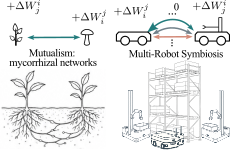
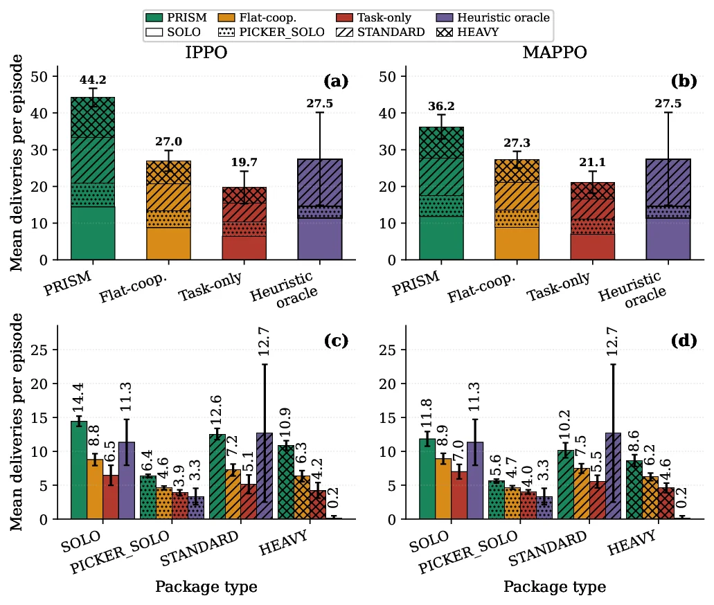
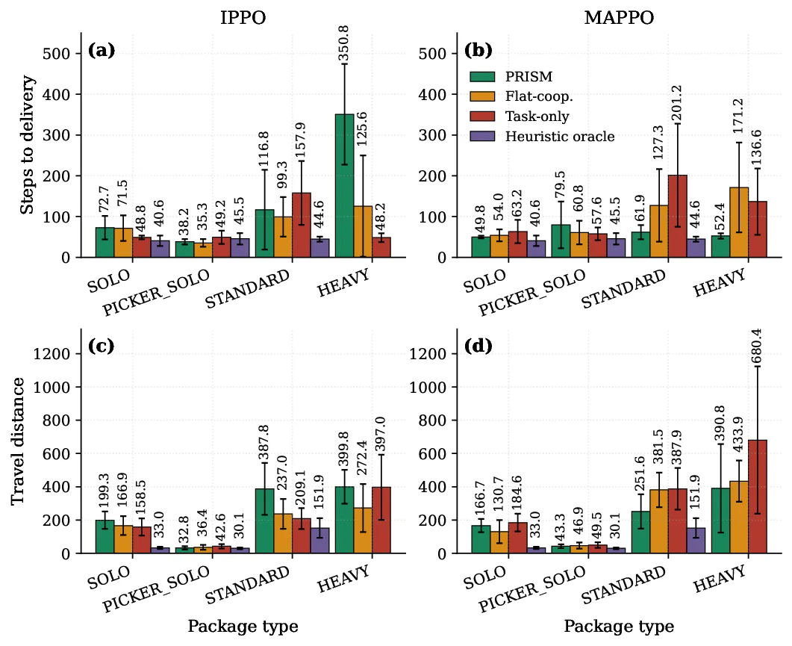
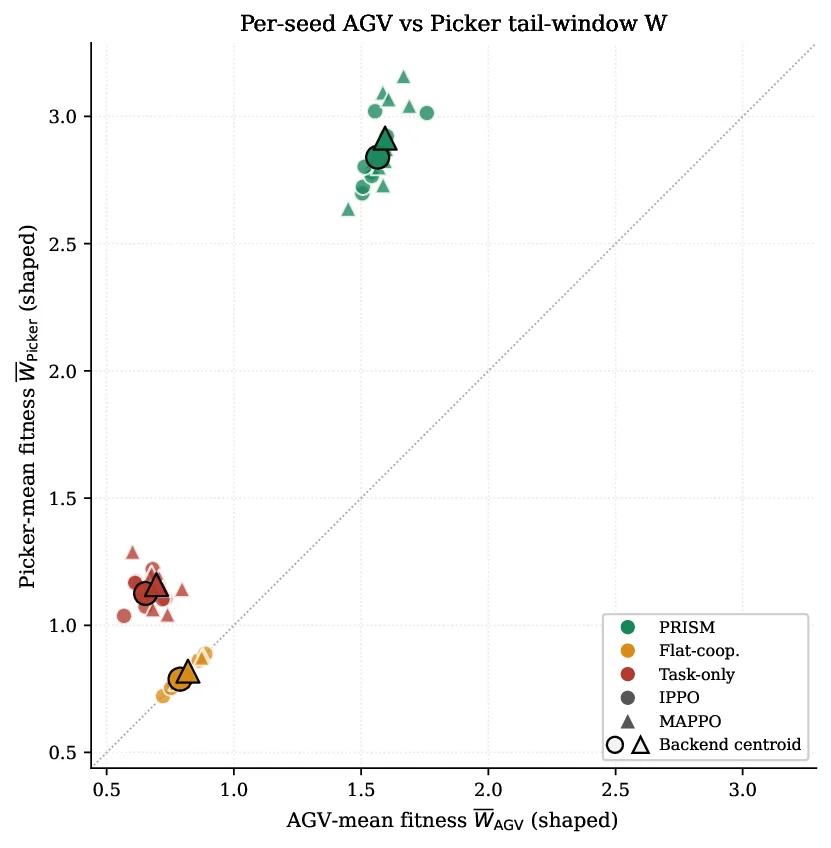

PRISM: Policy-shaping via Reward Decomposition for Inter-agent Symbiosis
Xuezhi Niu1
Didem Gurdur Broo1
1Cyber-physical Systems Lab, Department of Information Technology, Uppsala University
Abstract
Heterogeneous multi-robot warehouse systems require agents with
different roles, capabilities, and resource constraints to coordinate
around shared package-delivery tasks. PRISM introduces a symbiotic
reward-shaping framework that decomposes task performance into
relationship-aware components, measuring and shaping outcomes such as
mutualism, commensalism, parasitism, and competition. In battery-aware
TA-RWARE experiments with AGV and picker agents, PRISM improves
delivery throughput, supports harder package types, and produces
stronger mutualism proxies than flat-cooperative and task-only reward
baselines.

Ecological relationship types provide the organizing lens for
reward decomposition in heterogeneous warehouse cooperation.
Key Idea
The central idea of introducing symbiosis into multi-robot cooperation
is to move beyond undifferentiated team rewards and explicitly model
how one robot changes another robot's task fitness. In heterogeneous
teams, cooperation is relational: an AGV and a Picker may depend on
each other because neither can complete a cross-role request alone.
PRISM captures these directed dependencies as symbiotic relationships
and converts them into policy-shaping signals, allowing agents to
learn when their actions enable or constrain complementary partners
without changing the original task objective.
Robots do not merely contribute separate pieces of work to a shared
score. Their actions can enable, delay, or constrain the progress of
specific teammates. An AGV can transport a package but may depend on
Picker support at the shelf, while a Picker can handle the item but
cannot complete a transport-dependent request alone.
Complementary robots learn which interactions improve one another's
task progress, allowing the team to complete more cooperative requests
and achieve a higher overall outcome.
Task-only
Flat-cooperative
PRISM (symbiotic)
What the reward is about
Each robot's own task output
One lumped team score
The relationship created by each action
View of cooperation
Robots contribute individually
Robots are rewarded when the team performs well
Robots learn how complementary actions enable one another
How higher outcomes emerge
Improve local task completion
Encourage broad team-level coordination
Reinforce the cross-role interactions needed to complete cooperative requests
Sees how an action affects teammates
No
No
Yes; per-pair and role-aware
Captures partner-specific dependencies
No
No
Yes; AGV-Picker and AGV-two-Picker coupling
Distinguishes relationship types
No
No
Yes; mutualism, commensalism, parasitism, antagonism, and neutrality
Relationship estimation
-
-
Estimated online from task and resource events
Deliveries / episode (IPPO)
19.7 +/- 6.8
27.0 +/- 4.3
44.2 +/- 3.8
Deliveries / episode (MAPPO)
21.1 +/- 4.6
27.3 +/- 3.5
36.2 +/- 5.0
Gain vs. rule-based heuristic (average)
-25.8% (n.s.)
-1.5% (n.s.)
+46.2%
PRISM improves cooperation by making hidden cross-role dependencies
explicit during learning. The benefit is strongest for requests that
require several complementary robots to coordinate, such as heavy
deliveries requiring one AGV and two Pickers.
Method
The packaged experiments compare symbiotic shaping against
flat-cooperative and task-only reward conditions across IPPO and MAPPO.
Agents operate with partial observations, battery dynamics,
role-specific actions, charging behavior, and package-type
heterogeneity.
The methodology connects heterogeneous role dynamics, decomposed
reward terms, relationship classification, and policy optimization.
Results
These are the core quantitative and qualitative artifacts included in
this repository. The tables are derived from the compact summaries in
runs/results/.
Delivery throughput
Following the paper's throughput comparison, values are deliveries
per episode, reported as mean and standard deviation over 18
learned-policy runs per reward condition and backbone. The
heuristic baseline uses six seeded no-restock episodes.
Condition
IPPO
MAPPO
vs. Heur.
PRISM
44.2 ± 3.8
36.2 ± 5.0
+46.2%
Flat-coop.
27.0 ± 4.3 **
27.3 ± 3.5 **
-1.5% ns
Task-only
19.7 ± 6.8 **
21.1 ± 4.6 **
-25.8% ns
Heuristic
27.5 ± 15.8
27.5 ± 15.8
—
** p < 0.01 vs. PRISM within the same backbone; ns indicates not
significant. Averaged across backbones, PRISM reaches 40.2
deliveries per episode, improving over flat-cooperative reward by
48.3%, task-only reward by 97.1%, and the heuristic by 46.2%.

Throughput by backbone and package category.
Package-type delivery breakdown
PRISM improves total delivery counts and completes more standard and
heavy packages under both IPPO and MAPPO.
Backend
Reward condition
Total
SOLO
PICKER_SOLO
STANDARD
HEAVY
IPPO
PRISM
44.23 +/- 2.50
14.43
6.38
12.55
10.86
IPPO
Flat-cooperative
26.96 +/- 2.82
8.77
4.61
7.25
6.33
IPPO
Task-only
19.72 +/- 4.42
6.46
3.89
5.13
4.24
MAPPO
PRISM
36.24 +/- 3.29
11.83
5.61
10.16
8.63
MAPPO
Flat-cooperative
27.28 +/- 2.27
8.92
4.66
7.48
6.23
MAPPO
Task-only
21.14 +/- 3.00
7.00
4.01
5.53
4.60

Package-type and delivery-step analysis.
Cross-role coupling
PRISM produces clearer cross-role support patterns between AGVs
and pickers.

Cross-role coupling between heterogeneous agents.
Example Evaluation Rollout
PRISM IPPO evaluation rollout in the heterogeneous warehouse setting.
The compact artifact package includes learned-policy and heuristic
rollouts for qualitative inspection.
PRISM IPPO, 81 deliveries
BibTeX
If you find this work useful in your research, please consider citing:
@article{niu2026prism,
title = {PRISM: Policy-shaping via Reward decomposition for Inter-agent Symbiosis in Multi-Robot Cooperation},
author = {Niu, Xuezhi and Broo, Didem Gurdur},
journal = {xxxxx},
year = {2026}
}